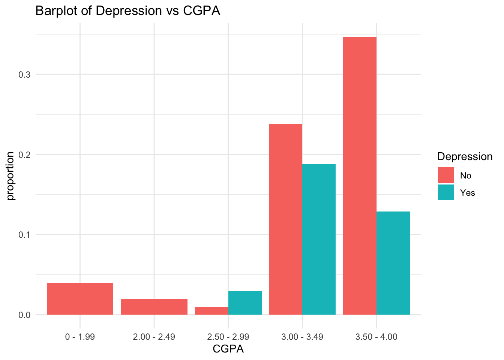

Research question: 1.why is there a significant correlation between mental health status and CGPA among university students? 2.How does the use of mental health resources, such as counselling or therapy, have a positive impact on academic performance? 3. How does demographic factors, such as gender or ethnicity, influence the relationship between mental health and academic performance?
Hypothesis: There is a significant correlation between poor mental health status and CGPA among university students.
Introduction:
The mental health of university students has become a growing concern in recent years. Many students experience various stressors, such as academic pressures, social challenges, and the transition to a new environment, which can significantly impact their overall well-being. One area of particular interest is the relationship between mental health status and academic performance, measured by the Cumulative Grade Point Average (CGPA). Understanding this correlation is essential for developing effective strategies and interventions to support students’ mental health and improve their academic outcomes.
The hypothesis suggests that there is a significant correlation between poor mental health status and CGPA among university students. It is posited that students who experience mental health difficulties may face challenges in managing their academic responsibilities, leading to lower CGPA scores. Furthermore, demographic factors, such as gender, ethnicity, and course of study, may influence this relationship. Certain groups may be more vulnerable to poor mental health outcomes, which can in turn impact their academic performance.
This research aims to explore the reasons behind the significant correlation between mental health status and CGPA among university students. By understanding the factors contributing to this relationship, educational institutions and support services can tailor interventions and resources to address the mental health needs of students, ultimately promoting both their well-being and academic success.
Descriptive statistics
This dataset has 101 rows, 11 columns and 44 missing values
timestamp: indicates the date and time when the survey was completed by the respondent.
Choose your gender : is a categorical variable that indicates the respondent’s gender.
Age: is a numerical variable that indicates the respondent’s age in years.
What is your course: is a categorical variable that indicates the respondent’s academic program or field of study.
Your current year of Study: is a categorical variable that indicates the respondent’s current year of study in their academic program.
What is your CGPA: is a numerical variable that indicates the respondent’s cumulative grade point average.
Marital status: is a categorical variable that indicates the respondent’s current marital status.
Do you have Depression: is a categorical variable that indicates whether the respondent has ever been diagnosed with or experienced symptoms of depression.
Do you have Anxiety: is a categorical variable that indicates whether the respondent has ever been diagnosed with or experienced symptoms of anxiety. Do you have Panic attack: is a categorical variable that indicates whether the respondent has ever been diagnosed with or experienced symptoms of panic attacks.
Did you seek any specialist for treatment: is a categorical variable that indicates whether the respondent has sought out any specialist for treatment related to their mental health issues. The variable includes a brief description of the types of specialists sought out by the respondents.
health <-read_csv("~/Desktop/603_Spring_2023/posts/_data/student_mental.csv")
Rows: 101 Columns: 11
── Column specification ────────────────────────────────────────────────────────
Delimiter: ","
chr (10): Timestamp, Choose your gender, What is your course?, Your current ...
dbl (1): Age
ℹ Use `spec()` to retrieve the full column specification for this data.
ℹ Specify the column types or set `show_col_types = FALSE` to quiet this message.
# Assuming you have a data frame named 'health'# Group by Age and calculate the countgrouped_data <- health %>%group_by(Age) %>%summarize(count =n())# Create the bar plot using ggplot2ggplot(grouped_data, aes(x = Age, y = count, fill = count)) +geom_bar(stat ="identity") +geom_text(aes(label = count), vjust =-0.5, size =3) +labs(title ="Distribution of Age") +theme_minimal()
Code
Health_SummaryStat2 <- health %>%group_by(Depression) %>%summarise(count =n(),percentage =round((n()/nrow(health)), digits =4))colors <-c("pink", "cyan", "blue") # Define colors for the pie chart# Create the pie chart using the pie() functionpie(Health_SummaryStat2$percentage, labels = Health_SummaryStat2$Depression,col = colors,main ="Pie Chart of Depression",cex.main =1.2,cex.lab =1.2)# Add a legendlegend("topright", legend = Health_SummaryStat2$Depression,fill = colors, cex =1.2)
Code
health %>%count(Gender, Depression, sort = F) %>%group_by(Gender) %>%mutate(prop =round((n /sum(n)), digits =4)) %>%ggplot(aes(x = Gender, y = prop, fill = Depression)) +geom_bar(stat ="identity") +geom_text(aes(label =paste(Gender, prop *100, "%")), position =position_stack(vjust =0.5)) +labs(title ="Barplot of Depression amongst Genders") +theme_minimal()
Code
health %>%count(CGPA, Depression, sort = F) %>%mutate(proportion =round((n /sum(n)), digits =4)) %>%ggplot(aes(x = CGPA, y = proportion, fill = Depression)) +geom_bar(stat ="identity", position ="dodge") +labs(title ="Barplot of Depression vs CGPA") +theme_minimal()

Code
health %>%filter(grepl('BIT|KOE|BCS|Engineering|Biomedical science', Course)) %>%count(Course, Depression, sort = T) %>%group_by(Course) %>%mutate(prop =round((n /sum(n)), digits =4)) %>%ggplot(aes(x = Course, y = n, fill = Depression)) +geom_bar(stat ="identity") +geom_text(aes(label =paste(Course, n)),position =position_stack(vjust =0.5),color ="black") +labs(title ="Barplot of Depression amongst the top 5 Courses") +theme_minimal()
library(stringr)# Example dataCGPA <-c("3.00 - 3.49","3.50 - 4.00", "2.50 - 2.99" ,"2.00 - 2.49" ,"0 - 1.99" )# Function to convert CGPA range to numericconvertCGPA <-function(cgpa) { lower <-as.numeric(str_extract(cgpa, "\\d+\\.\\d+"))return(lower)}# Apply the conversion function to CGPA columnconverted_CGPA <-sapply(CGPA, convertCGPA)# Outputprint(converted_CGPA)
Logistic regression is a statistical modeling technique used to predict the probability of an event occurring. It is commonly used when the dependent variable is binary or categorical. The model estimates the relationship between the independent variables and the log-odds of the event, using the logistic function. The logistic function maps the linear combination of predictors to a value between 0 and 1, representing the probability of the event.
Logistic Regression Assumptions
The first assumption is that there is a linear relationship between continuous independent variables and the logit of the outcome variable.
Independence of errors requires that there be no dependence between samples in the model, i.e. using the same individuals at different times.
Multicollinearity refers to a relationship (correlation) between the independent variables and must be excluded from logistic regression models
Multiple logistic regression
The multiple logistic regression is used to predict the probability of class membership based on multiple predictor variables, as follow:
Model 1
A logistic regression is said to provide a better fit to the data if it demonstrates an improvement over a model with fewer predictors. This is performed using the likelihood ratio test, which compares the likelihood of the data under the full model against the likelihood of the data under a model with fewer predictors. Removing predictor variables from a model will almost always make the model fit less well (i.e. a model will have a lower log likelihood), but it is necessary to test whether the observed difference in model fit is statistically significant.
# Fit logistic regression models# Research Question 1: Why is there a significant correlation between mental health status and CGPA among university students?model1 <-glm(CGPA ~ Anxiety, data = train_data, family = binomial)# Print the model summariessummary(model1)
Call:
glm(formula = CGPA ~ Anxiety, family = binomial, data = train_data)
Deviance Residuals:
Min 1Q Median 3Q Max
-2.6557 0.2444 0.5371 0.5371 0.5371
Coefficients:
Estimate Std. Error z value Pr(>|z|)
(Intercept) 1.8632 0.3583 5.201 1.99e-07 ***
AnxietyYes 1.6333 1.0764 1.517 0.129
---
Signif. codes: 0 '***' 0.001 '**' 0.01 '*' 0.05 '.' 0.1 ' ' 1
(Dispersion parameter for binomial family taken to be 1)
Null deviance: 65.226 on 100 degrees of freedom
Residual deviance: 61.890 on 99 degrees of freedom
AIC: 65.89
Number of Fisher Scoring iterations: 6
Based on the output, the model suggests that there is no statistically significant association between Anxiety (as a predictor) and CGPA. The p-value for the AnxietyYes coefficient (p = 0.129) is greater than the conventional significance level (e.g., 0.05), indicating that the relationship between Anxiety and CGPA is not statistically significant in this model.
Code
# Calculate AIC and BICAIC_val <-AIC(model1)BIC_val <-BIC(model1)cat("AIC:", AIC_val, "\n")
AIC: 65.8904
Code
cat("BIC:", BIC_val, "\n")
BIC: 71.12064
Code
model1 <-glm(CGPA ~ Depression, data = train_data, family = binomial)# Print the model summariessummary(model1)
Call:
glm(formula = CGPA ~ Depression, family = binomial, data = train_data)
Deviance Residuals:
Min 1Q Median 3Q Max
-2.2166 0.4234 0.4735 0.4735 0.4735
Coefficients:
Estimate Std. Error z value Pr(>|z|)
(Intercept) 2.1316 0.3998 5.332 9.7e-08 ***
DepressionYes 0.2355 0.7241 0.325 0.745
---
Signif. codes: 0 '***' 0.001 '**' 0.01 '*' 0.05 '.' 0.1 ' ' 1
(Dispersion parameter for binomial family taken to be 1)
Null deviance: 65.226 on 100 degrees of freedom
Residual deviance: 65.118 on 99 degrees of freedom
AIC: 69.118
Number of Fisher Scoring iterations: 5
Based on the output, the model suggests that there is no statistically significant association between Depression (as a predictor) and CGPA. The p-value for the DepressionYes coefficient (p = 0.745) is greater than the conventional significance level (e.g., 0.05), indicating that the relationship between Depression and CGPA is not statistically significant in this model.
Code
# Calculate AIC and BICAIC_val <-AIC(model1)BIC_val <-BIC(model1)cat("AIC:", AIC_val, "\n")
AIC: 69.11786
Code
cat("BIC:", BIC_val, "\n")
BIC: 74.3481
Code
model1 <-glm(CGPA ~ Panic_Attack, data = train_data, family = binomial)summary(model1)
Call:
glm(formula = CGPA ~ Panic_Attack, family = binomial, data = train_data)
Deviance Residuals:
Min 1Q Median 3Q Max
-2.2848 0.3908 0.3908 0.5732 0.5732
Coefficients:
Estimate Std. Error z value Pr(>|z|)
(Intercept) 2.5337 0.4646 5.453 4.95e-08 ***
Panic_AttackYes -0.8109 0.6720 -1.207 0.228
---
Signif. codes: 0 '***' 0.001 '**' 0.01 '*' 0.05 '.' 0.1 ' ' 1
(Dispersion parameter for binomial family taken to be 1)
Null deviance: 65.226 on 100 degrees of freedom
Residual deviance: 63.795 on 99 degrees of freedom
AIC: 67.795
Number of Fisher Scoring iterations: 5
Code
# Calculate AIC and BICAIC_val <-AIC(model1)BIC_val <-BIC(model1)cat("AIC:", AIC_val, "\n")
AIC: 67.79536
Code
cat("BIC:", BIC_val, "\n")
BIC: 73.0256
Based on the output you shared, the model suggests that there is no statistically significant association between Panic_Attack (as a predictor) and CGPA. The p-value for the Panic_AttackYes coefficient (p = 0.228) is greater than the conventional significance level (e.g., 0.05), indicating that the relationship between Panic_Attack and CGPA is not statistically significant in this model.
After performing logistic regression, based on these results, it can be concluded that the research question of whether there is a significant correlation between mental health status and CGPA among university students is not supported. This implies that anxiety,Panic attack,Depression levels alone may not have a direct impact on students’ academic performance, as measured by CGPA, in the context of this study.
Model 2:
Code
# Research Question 2: How does the use of mental health resources, such as counseling or therapy, have a positive impact on academic performance?model2 <-glm(CGPA ~ Treatment, data = train_data, family = binomial)summary(model2)
Call:
glm(formula = CGPA ~ Treatment, family = binomial, data = train_data)
Deviance Residuals:
Min 1Q Median 3Q Max
-2.2246 0.4194 0.4194 0.4194 0.9005
Coefficients:
Estimate Std. Error z value Pr(>|z|)
(Intercept) 2.3865 0.3695 6.459 1.05e-10 ***
TreatmentYes -1.6933 0.9415 -1.798 0.0721 .
---
Signif. codes: 0 '***' 0.001 '**' 0.01 '*' 0.05 '.' 0.1 ' ' 1
(Dispersion parameter for binomial family taken to be 1)
Null deviance: 65.226 on 100 degrees of freedom
Residual deviance: 62.536 on 99 degrees of freedom
AIC: 66.536
Number of Fisher Scoring iterations: 5
Code
# Calculate AIC and BICAIC_val <-AIC(model2)BIC_val <-BIC(model2)cat("AIC:", AIC_val, "\n")
AIC: 66.5357
Code
cat("BIC:", BIC_val, "\n")
BIC: 71.76594
After performing the logistic regression, Based on results the relationship between the use of mental health resources (Treatment) and CGPA, the coefficient for Treatment (TreatmentYes) is not statistically significant at conventional levels (p = 0.0721). This suggests that there is no strong evidence to support the hypothesis that the use of mental health resources, such as counseling or therapy, has a positive impact on academic performance, as measured by CGPA.
It is important to note that the p-value is relatively close to the conventional significance level of 0.05. This indicates a marginal level of significance, suggesting that there might be a weak relationship between the use of mental health resources and CGPA, but the evidence is not strong enough to conclude a significant positive impact on academic performance.
The correlation coefficient of 0.08447828 suggests a weak positive correlation between ‘Panic_Attack’ and ‘Anxiety’ in the data.So i will not include panic attacks
Model 3:
Code
# Research Question 3: How does demographic factors, such as gender or ethnicity, influence the relationship between mental health and academic performance?model3 <-glm(CGPA ~ Gender + Anxiety +Age + Course + Married + Depression, data = train_data, family = binomial)summary(model3)
# Calculate AIC and BICAIC_val <-AIC(model3)BIC_val <-BIC(model3)cat("AIC:", AIC_val, "\n")
AIC: 132.6168
Code
cat("BIC:", BIC_val, "\n")
BIC: 271.2182
Based on the logistic regression results, the relationship between demographic factors (Gender, Age, Course, Married) and mental health variables (Anxiety, Depression, Panic_Attack) with CGPA, it seems that several coefficients are not statistically significant at conventional levels. This means that there is no strong evidence to support the hypothesis that these demographic factors significantly influence the relationship between mental health and academic performance, as measured by CGPA.
Specifically, the coefficients for Gender Male (p = 0.564), Age (p = 0.968), Course (multiple categories with p-values close to 1.000), and MarriedYes (p = 0.949) are not statistically significant. Similarly, the coefficients for Anxiety Yes (p = 0.181), Depression Yes (p = 0.860), and Panic Attack Yes (p = 0.170) are not statistically significant.
These results suggest that based on the variables included in the model, there is no strong evidence to support the influence of gender, age, course, or marital status on the relationship between mental health variables and academic performance.
Source Code
---title: "Final_checkIn 3"author: "Sai Padma pothula"desription: ""date: "05/21/2023"format: html: toc: true code-fold: true code-copy: true code-tools: truecategories: - Final checkIn 3 - sai Pothula---Research question: 1.why is there a significant correlation between mental health status and CGPA among university students? 2.How does the use of mental health resources, such as counselling or therapy, have a positive impact on academic performance? 3. How does demographic factors, such as gender or ethnicity, influence the relationship between mental health and academic performance?Hypothesis: There is a significant correlation between poor mental health status and CGPA among university students. Introduction:The mental health of university students has become a growing concern in recent years. Many students experience various stressors, such as academic pressures, social challenges, and the transition to a new environment, which can significantly impact their overall well-being. One area of particular interest is the relationship between mental health status and academic performance, measured by the Cumulative Grade Point Average (CGPA). Understanding this correlation is essential for developing effective strategies and interventions to support students' mental health and improve their academic outcomes.The hypothesis suggests that there is a significant correlation between poor mental health status and CGPA among university students. It is posited that students who experience mental health difficulties may face challenges in managing their academic responsibilities, leading to lower CGPA scores. Furthermore, demographic factors, such as gender, ethnicity, and course of study, may influence this relationship. Certain groups may be more vulnerable to poor mental health outcomes, which can in turn impact their academic performance.This research aims to explore the reasons behind the significant correlation between mental health status and CGPA among university students. By understanding the factors contributing to this relationship, educational institutions and support services can tailor interventions and resources to address the mental health needs of students, ultimately promoting both their well-being and academic success.Descriptive statistics This dataset has 101 rows, 11 columns and 44 missing values timestamp: indicates the date and time when the survey was completed by the respondent.Choose your gender : is a categorical variable that indicates the respondent's gender.Age: is a numerical variable that indicates the respondent's age in years.What is your course: is a categorical variable that indicates the respondent's academic program or field of study.Your current year of Study: is a categorical variable that indicates the respondent's current year of study in their academic program.What is your CGPA: is a numerical variable that indicates the respondent's cumulative grade point average.Marital status: is a categorical variable that indicates the respondent's current marital status.Do you have Depression: is a categorical variable that indicates whether the respondent has ever been diagnosed with or experienced symptoms of depression.Do you have Anxiety: is a categorical variable that indicates whether the respondent has ever been diagnosed with or experienced symptoms of anxiety.Do you have Panic attack: is a categorical variable that indicates whether the respondent has ever been diagnosed with or experienced symptoms of panic attacks.Did you seek any specialist for treatment: is a categorical variable that indicates whether the respondent has sought out any specialist for treatment related to their mental health issues. The variable includes a brief description of the types of specialists sought out by the respondents.```{r}library(tidyverse)library(readr)library(stats)library(ggplot2)``````{R}health <-read_csv("~/Desktop/603_Spring_2023/posts/_data/student_mental.csv")``````{r}names(health) <-c('Timestamp', 'Gender', 'Age', 'Course', 'Year', 'CGPA', 'Married', 'Depression', 'Anxiety', 'Panic_Attack', 'Treatment')indx <-apply(health, 2, function(x) any(is.na(x)))indx``````{r}which(is.na(health$Age))``````{r}health[44,'Age'] <-median(health$Age, na.rm =T)``````{r}unique(health$Year)``````{r}# Assuming you have a data frame named 'health'# Group by Age and calculate the countgrouped_data <- health %>%group_by(Age) %>%summarize(count =n())# Create the bar plot using ggplot2ggplot(grouped_data, aes(x = Age, y = count, fill = count)) +geom_bar(stat ="identity") +geom_text(aes(label = count), vjust =-0.5, size =3) +labs(title ="Distribution of Age") +theme_minimal()``````{r}Health_SummaryStat2 <- health %>%group_by(Depression) %>%summarise(count =n(),percentage =round((n()/nrow(health)), digits =4))colors <-c("pink", "cyan", "blue") # Define colors for the pie chart# Create the pie chart using the pie() functionpie(Health_SummaryStat2$percentage, labels = Health_SummaryStat2$Depression,col = colors,main ="Pie Chart of Depression",cex.main =1.2,cex.lab =1.2)# Add a legendlegend("topright", legend = Health_SummaryStat2$Depression,fill = colors, cex =1.2)``````{r}health %>%count(Gender, Depression, sort = F) %>%group_by(Gender) %>%mutate(prop =round((n /sum(n)), digits =4)) %>%ggplot(aes(x = Gender, y = prop, fill = Depression)) +geom_bar(stat ="identity") +geom_text(aes(label =paste(Gender, prop *100, "%")), position =position_stack(vjust =0.5)) +labs(title ="Barplot of Depression amongst Genders") +theme_minimal()``````{r}health %>%count(CGPA, Depression, sort = F) %>%mutate(proportion =round((n /sum(n)), digits =4)) %>%ggplot(aes(x = CGPA, y = proportion, fill = Depression)) +geom_bar(stat ="identity", position ="dodge") +labs(title ="Barplot of Depression vs CGPA") +theme_minimal()``````{r}health %>%filter(grepl('BIT|KOE|BCS|Engineering|Biomedical science', Course)) %>%count(Course, Depression, sort = T) %>%group_by(Course) %>%mutate(prop =round((n /sum(n)), digits =4)) %>%ggplot(aes(x = Course, y = n, fill = Depression)) +geom_bar(stat ="identity") +geom_text(aes(label =paste(Course, n)),position =position_stack(vjust =0.5),color ="black") +labs(title ="Barplot of Depression amongst the top 5 Courses") +theme_minimal()``````{r}health[,c(5)] <-lapply(health[,c(5)], function(x)recode(x,"year 1"=1,"year 2"=2, "year 3"=3 , "year 4"=4, "Year 1"=1, "Year 2"=2, "Year 3"=3))``````{r}unique(health$CGPA)``````{r}library(stringr)# Example dataCGPA <-c("3.00 - 3.49","3.50 - 4.00", "2.50 - 2.99" ,"2.00 - 2.49" ,"0 - 1.99" )# Function to convert CGPA range to numericconvertCGPA <-function(cgpa) { lower <-as.numeric(str_extract(cgpa, "\\d+\\.\\d+"))return(lower)}# Apply the conversion function to CGPA columnconverted_CGPA <-sapply(CGPA, convertCGPA)# Outputprint(converted_CGPA)``````{r}health[,c(6)] <-lapply(health[,c(6)], function(x)recode(x,"3.00 - 3.49"=3.00,"3.50 - 4.00"=3.50, "2.50 - 2.99"=2.50 , "2.00 - 2.49"=2.00, "0 - 1.99"=1.99 ))``````{r}train_data <-select(health,Age=Age, Gender=Gender,CGPA= CGPA, Course=Course,Married=Married, Depression=Depression, Anxiety=Anxiety, Panic_Attack = Panic_Attack,Treatment=Treatment)```Create Logistic Regression ModelLogistic regression is a statistical modeling technique used to predict the probability of an event occurring. It is commonly used when the dependent variable is binary or categorical. The model estimates the relationship between the independent variables and the log-odds of the event, using the logistic function. The logistic function maps the linear combination of predictors to a value between 0 and 1, representing the probability of the event.# Logistic Regression AssumptionsThe first assumption is that there is a linear relationship between continuous independent variables and the logit of the outcome variable.Independence of errors requires that there be no dependence between samples in the model, i.e. using the same individuals at different times.Multicollinearity refers to a relationship (correlation) between the independent variables and must be excluded from logistic regression models# Multiple logistic regressionThe multiple logistic regression is used to predict the probability of class membership based on multiple predictor variables, as follow:# Model 1A logistic regression is said to provide a better fit to the data if it demonstrates an improvement over a model with fewer predictors. This is performed using the likelihood ratio test, which compares the likelihood of the data under the full model against the likelihood of the data under a model with fewer predictors. Removing predictor variables from a model will almost always make the model fit less well (i.e. a model will have a lower log likelihood), but it is necessary to test whether the observed difference in model fit is statistically significant.```{r}train_data$CGPA <-ifelse(train_data$CGPA >=3.00, 1, 0)``````{r}# Fit logistic regression models# Research Question 1: Why is there a significant correlation between mental health status and CGPA among university students?model1 <-glm(CGPA ~ Anxiety, data = train_data, family = binomial)# Print the model summariessummary(model1)```Based on the output, the model suggests that there is no statistically significant association between Anxiety (as a predictor) and CGPA. The p-value for the AnxietyYes coefficient (p = 0.129) is greater than the conventional significance level (e.g., 0.05), indicating that the relationship between Anxiety and CGPA is not statistically significant in this model.```{r}# Calculate AIC and BICAIC_val <-AIC(model1)BIC_val <-BIC(model1)cat("AIC:", AIC_val, "\n")cat("BIC:", BIC_val, "\n")``````{r}model1 <-glm(CGPA ~ Depression, data = train_data, family = binomial)# Print the model summariessummary(model1)```Based on the output, the model suggests that there is no statistically significant association between Depression (as a predictor) and CGPA. The p-value for the DepressionYes coefficient (p = 0.745) is greater than the conventional significance level (e.g., 0.05), indicating that the relationship between Depression and CGPA is not statistically significant in this model.```{r}# Calculate AIC and BICAIC_val <-AIC(model1)BIC_val <-BIC(model1)cat("AIC:", AIC_val, "\n")cat("BIC:", BIC_val, "\n")``````{r}model1 <-glm(CGPA ~ Panic_Attack, data = train_data, family = binomial)summary(model1)``````{r}# Calculate AIC and BICAIC_val <-AIC(model1)BIC_val <-BIC(model1)cat("AIC:", AIC_val, "\n")cat("BIC:", BIC_val, "\n")```Based on the output you shared, the model suggests that there is no statistically significant association between Panic_Attack (as a predictor) and CGPA. The p-value for the Panic_AttackYes coefficient (p = 0.228) is greater than the conventional significance level (e.g., 0.05), indicating that the relationship between Panic_Attack and CGPA is not statistically significant in this model.After performing logistic regression, based on these results, it can be concluded that the research question of whether there is a significant correlation between mental health status and CGPA among university students is not supported. This implies that anxiety,Panic attack,Depression levels alone may not have a direct impact on students' academic performance, as measured by CGPA, in the context of this study.Model 2:```{r}# Research Question 2: How does the use of mental health resources, such as counseling or therapy, have a positive impact on academic performance?model2 <-glm(CGPA ~ Treatment, data = train_data, family = binomial)summary(model2)``````{r}# Calculate AIC and BICAIC_val <-AIC(model2)BIC_val <-BIC(model2)cat("AIC:", AIC_val, "\n")cat("BIC:", BIC_val, "\n")```After performing the logistic regression, Based on results the relationship between the use of mental health resources (Treatment) and CGPA, the coefficient for Treatment (TreatmentYes) is not statistically significant at conventional levels (p = 0.0721). This suggests that there is no strong evidence to support the hypothesis that the use of mental health resources, such as counseling or therapy, has a positive impact on academic performance, as measured by CGPA.It is important to note that the p-value is relatively close to the conventional significance level of 0.05. This indicates a marginal level of significance, suggesting that there might be a weak relationship between the use of mental health resources and CGPA, but the evidence is not strong enough to conclude a significant positive impact on academic performance.```{r}health[,c(2,7:11)] <-lapply(health[,c(2,7:11)], function(x)recode(x,"Yes"=1,"No"=0, "Female"=1 , "Male"=0))``````{r}correlation <-cor(health$Panic_Attack, health$Anxiety)print(correlation)```The correlation coefficient of 0.08447828 suggests a weak positive correlation between 'Panic_Attack' and 'Anxiety' in the data.So i will not include panic attacksModel 3:```{r}# Research Question 3: How does demographic factors, such as gender or ethnicity, influence the relationship between mental health and academic performance?model3 <-glm(CGPA ~ Gender + Anxiety +Age + Course + Married + Depression, data = train_data, family = binomial)summary(model3)```Hypothesis testing```{r}anova_test <-anova(model3, test ="Chi")print(anova_test)``````{r}# Calculate AIC and BICAIC_val <-AIC(model3)BIC_val <-BIC(model3)cat("AIC:", AIC_val, "\n")cat("BIC:", BIC_val, "\n")```Based on the logistic regression results, the relationship between demographic factors (Gender, Age, Course, Married) and mental health variables (Anxiety, Depression, Panic_Attack) with CGPA, it seems that several coefficients are not statistically significant at conventional levels. This means that there is no strong evidence to support the hypothesis that these demographic factors significantly influence the relationship between mental health and academic performance, as measured by CGPA.Specifically, the coefficients for Gender Male (p = 0.564), Age (p = 0.968), Course (multiple categories with p-values close to 1.000), and MarriedYes (p = 0.949) are not statistically significant. Similarly, the coefficients for Anxiety Yes (p = 0.181), Depression Yes (p = 0.860), and Panic Attack Yes (p = 0.170) are not statistically significant.These results suggest that based on the variables included in the model, there is no strong evidence to support the influence of gender, age, course, or marital status on the relationship between mental health variables and academic performance.